Rüstungen, Schilde & Zubehör
Rüstungen, Schilde & Zubehör in Valheim – 148 Gegenstände mit Biom, Fundort, benötigtem Werkzeug, Rezept und Verwendung.
Kein Gegenstand gefunden.
 Aasknochen-Antlitz
Aasknochen-Antlitz
Verbreitet Furcht unter Feinden und Mut unter Verbündeten.
Herkunft
- Herstellen: Schmiede (Stufe 2) aus 5 ×
 Bärenfell, 1 ×
Bärenfell, 1 ×  Aasbären-Trophäe · je Aufwertung: 2 × Bärenfell
Aasbären-Trophäe · je Aufwertung: 2 × Bärenfell
 Aasknochen-Käfig
Aasknochen-Käfig
Hergestellt aus den zersplitterten Knochen eines gequälten Bären.
Herkunft
- Herstellen: Schmiede (Stufe 2) aus 4 × Bärenfell, 3 ×
 Aasbären-Brustkorb, 4 ×
Aasbären-Brustkorb, 4 ×  Leinenzwirn · je Aufwertung: 2 × Bärenfell, 1 × Aasbären-Brustkorb, 1 × Leinenzwirn
Leinenzwirn · je Aufwertung: 2 × Bärenfell, 1 × Aasbären-Brustkorb, 1 × Leinenzwirn
 Aasknochen-Tücher
Aasknochen-Tücher
Dickes Fell und Knochensplitter, die zu einem groben Rock verwoben wurden.
Herkunft
- Herstellen: Schmiede (Stufe 2) aus 10 × Bärenfell, 1 × Aasbären-Brustkorb, 4 × Leinenzwirn · je Aufwertung: 5 × Bärenfell, 1 × Aasbären-Brustkorb, 1 × Leinenzwirn
 Aschenumhang
Aschenumhang
Dieser Umhang ist mit dünnen Metallfäden durchzogen, die ein kompliziertes Muster bilden, wie ein von den Nornen gewobenes Schicksal.
Herkunft
- Herstellen: Schwarzschmiede (Stufe 3) aus 6 ×
 Asksvin-Haut, 2 ×
Asksvin-Haut, 2 ×  Morgensehne, 5 ×
Morgensehne, 5 ×  Flammenkern · je Aufwertung: 2 × Asksvin-Haut
Flammenkern · je Aufwertung: 2 × Asksvin-Haut
 Asksvin-Mantel
Asksvin-Mantel
Dieser dicke Umhang fängt den Wind ein, ähnlich wie das Segel eines Schiffs.
Herkunft
- Herstellen: Galdr-Tisch (Stufe 2) aus 6 × Asksvin-Haut, 2 × Morgensehne · je Aufwertung: 2 × Asksvin-Haut
 Bronzeanhänger
Bronzeanhänger
Ein wunderschöner Anhänger, der die Belastbarkeit eines Bären repräsentiert.
Herkunft
- Herstellen: Schmiede aus 5 ×
 Bronze, 1 ×
Bronze, 1 ×  Bären-Trophäe, 3 ×
Bären-Trophäe, 3 ×  Rubin
Rubin
 Bronzehelm
Bronzehelm
Hilft dein Hirn im Schädel zu behalten.
Herkunft
- Herstellen: Schmiede aus 5 × Bronze, 2 ×
 Hirschfell · je Aufwertung: 3 × Bronze
Hirschfell · je Aufwertung: 3 × Bronze
 Bronzener Beinschutz
Bronzener Beinschutz
Beinschienen aus Bronze, um deine Beine zu schützen.
Herkunft
- Herstellen: Schmiede aus 5 × Bronze, 2 × Hirschfell · je Aufwertung: 3 × Bronze
 Bronzener Brustpanzer
Bronzener Brustpanzer
Ein Harnisch aus gehämmerter Bronze.
Herkunft
- Herstellen: Schmiede aus 5 × Bronze, 2 × Hirschfell · je Aufwertung: 3 × Bronze
 Bronzener Faustschild
Bronzener Faustschild
Ein Schild aus gehärteter Bronze. Perfekt, um Klingen zu brechen.
Herkunft
 Brustpanzer des Beschützers
Brustpanzer des Beschützers
Pelz und Haut und Metall arbeiten gemeinsam, um die Schläge des Feindes abzuwehren.
Herkunft
- Herstellen: Schwarzschmiede (Stufe 4) aus 20 ×
 Blutgold, 1 ×
Blutgold, 1 ×  Gussform: Brustpanzer des Beschützers, 8 ×
Gussform: Brustpanzer des Beschützers, 8 ×  Elchhaut, 4 ×
Elchhaut, 4 ×  Lederriemen · je Aufwertung: 15 × Blutgold, 3 × Elchhaut, 3 × Lederriemen
Lederriemen · je Aufwertung: 15 × Blutgold, 3 × Elchhaut, 3 × Lederriemen - Garen: Frost-Gießerei aus
 Guss: Brustpanzer des Beschützers
Guss: Brustpanzer des Beschützers
 Brustpanzer von Ask
Brustpanzer von Ask
Der erste Mann Midgards wusste, wie er seine wichtigsten Organe zu schützen hatte. Vielleicht mit einem solchen Brustpanzer.
Herkunft
- Herstellen: Schwarzschmiede (Stufe 3) aus 15 × Leinenzwirn, 4 ×
 Lox-Pelz, 10 × Asksvin-Haut · je Aufwertung: 10 × Leinenzwirn, 2 × Lox-Pelz, 5 × Asksvin-Haut
Lox-Pelz, 10 × Asksvin-Haut · je Aufwertung: 10 × Leinenzwirn, 2 × Lox-Pelz, 5 × Asksvin-Haut
 Brustschutz der Vorhut
Brustschutz der Vorhut
Meisterhaft gefertigte Lederrüstung, die herausragenden Schutz bietet, ohne die Bewegungsfreiheit einzuschränken.
Herkunft
- Herstellen: Schwarzschmiede (Stufe 4) aus 12 × Blutgold, 1 ×
 Gussform: Brustschutz der Vorhut, 8 ×
Gussform: Brustschutz der Vorhut, 8 ×  Elaking-Haarbüschel, 4 × Lederriemen · je Aufwertung: 6 × Blutgold, 4 × Elaking-Haarbüschel, 2 × Lederriemen
Elaking-Haarbüschel, 4 × Lederriemen · je Aufwertung: 6 × Blutgold, 4 × Elaking-Haarbüschel, 2 × Lederriemen - Garen: Frost-Gießerei aus
 Guss: Brustschutz der Vorhut
Guss: Brustschutz der Vorhut
 Chitin-Beinschienen
Chitin-Beinschienen
Beinschutz aus robustem Chitin.
Herkunft
- Herstellen: Schwarzschmiede aus 20 ×
 Chitinpanzer, 3 ×
Chitinpanzer, 3 ×  Schuppenhaut, 5 ×
Schuppenhaut, 5 ×  Eisen, 4 ×
Eisen, 4 ×  Verfeinertes Eitr · je Aufwertung: 10 × Chitinpanzer, 1 × Schuppenhaut, 2 × Verfeinertes Eitr
Verfeinertes Eitr · je Aufwertung: 10 × Chitinpanzer, 1 × Schuppenhaut, 2 × Verfeinertes Eitr
 Chitin-Brustplatte
Chitin-Brustplatte
Eine Brustplatte, hergestellt aus dem glänzenden Panzer eines riesigen Insekts.
Herkunft
- Herstellen: Schwarzschmiede aus 20 × Chitinpanzer, 3 × Schuppenhaut, 5 × Eisen, 4 × Verfeinertes Eitr · je Aufwertung: 10 × Chitinpanzer, 1 × Schuppenhaut, 2 × Verfeinertes Eitr
 Chitin-Faustschild
Chitin-Faustschild
Der Schädel eines Suchers ist robust, aber nicht schwer – perfekt für einen kleinen, wendigen Schild.
Herkunft
- Herstellen: Schwarzschmiede aus 16 × Chitinpanzer, 3 × Schuppenhaut, 10 × Verfeinertes Eitr · je Aufwertung: 8 × Chitinpanzer, 3 × Schuppenhaut, 3 × Verfeinertes Eitr
 Chitin-Helm
Chitin-Helm
Die Leute werden dich vielleicht als Riesenameise bezeichnen. Aber das tun sie auch nur einmal.
Herkunft
- Herstellen: Schwarzschmiede aus 16 × Chitinpanzer, 3 × Schuppenhaut, 2 ×
 Unterkiefer, 4 × Verfeinertes Eitr · je Aufwertung: 8 × Chitinpanzer, 1 × Schuppenhaut, 2 × Verfeinertes Eitr
Unterkiefer, 4 × Verfeinertes Eitr · je Aufwertung: 8 × Chitinpanzer, 1 × Schuppenhaut, 2 × Verfeinertes Eitr
 Chitin-Schild
Chitin-Schild
Der nahezu unzerbrechliche Panzer deiner Feinde gibt einen ausgezeichneten Schild ab.
Herkunft
- Herstellen: Schwarzschmiede aus 20 × Chitinpanzer, 3 × Schuppenhaut, 10 × Verfeinertes Eitr · je Aufwertung: 10 × Chitinpanzer, 3 × Schuppenhaut, 3 × Verfeinertes Eitr
 Drachenhelm
Drachenhelm
Ein filigran ausgearbeiteter, edler Helm.
Herkunft
- Herstellen: Schmiede aus 20 ×
 Silber, 2 ×
Silber, 2 ×  Wolfspelz, 2 ×
Wolfspelz, 2 ×  Drachen-Trophäe · je Aufwertung: 5 × Silber
Drachen-Trophäe · je Aufwertung: 5 × Silber
 Durchschlagende Fußfessel
Durchschlagende Fußfessel
Eine rasiermesserscharfe Fußkette.
Herkunft
- Herstellen: Schwarzschmiede aus 5 × Verfeinertes Eitr, 5 × Schuppenhaut, 1 × Unterkiefer, 1 ×
 Sucher-Trophäe
Sucher-Trophäe
 Dverger-Reif
Dverger-Reif
Eine tragbare unerschöpfliche Lichtquelle für den Verlies-Erkunder.
Herkunft
- Kaufen: Haldor · 620 Münzen
 Einfache Kappe (lila)
Einfache Kappe (lila)
Eine einfache aber modische lila Kappe.
Herkunft
- Kaufen: Hildir · 150 Münzen
 Einfache Kappe (rot)
Einfache Kappe (rot)
Eine einfache aber modische rote Kappe.
Herkunft
- Kaufen: Hildir · 150 Münzen
 Einfache Kleidung (braun)
Einfache Kleidung (braun)
Ein einfaches braunes Kleid.
Herkunft
- Kaufen: Hildir · 350 Münzen · nach Rückgabe: Hildirs Messingtruhe
 Einfache Kleidung (natur)
Einfache Kleidung (natur)
Ein einfaches Kleid.
Herkunft
- Kaufen: Hildir · 250 Münzen
 Einfache Tunika (blau)
Einfache Tunika (blau)
Eine einfache blaue Tunika.
Herkunft
- Kaufen: Hildir · 350 Münzen · nach Rückgabe: Hildirs Messingtruhe
 Einfache Tunika (gelb)
Einfache Tunika (gelb)
Eine einfache gelbe Tunika.
Herkunft
- Kaufen: Hildir · 350 Münzen · nach Rückgabe: Hildirs Messingtruhe
 Einfache Tunika (natur)
Einfache Tunika (natur)
Eine einfache Tunika.
Herkunft
- Kaufen: Hildir · 250 Münzen
 Einfache Tunika (rot)
Einfache Tunika (rot)
Eine einfache rote Tunika.
Herkunft
- Kaufen: Hildir · 350 Münzen · nach Rückgabe: Hildirs Messingtruhe
 Einfaches Kleid (blau)
Einfaches Kleid (blau)
Ein einfaches blaues Kleid.
Herkunft
- Kaufen: Hildir · 350 Münzen · nach Rückgabe: Hildirs Messingtruhe
 Einfaches Kleid (gelb)
Einfaches Kleid (gelb)
Ein einfaches gelbes Kleid.
Herkunft
- Kaufen: Hildir · 350 Münzen · nach Rückgabe: Hildirs Messingtruhe
 Eisenbeinschienen
Eisenbeinschienen
Beinschienen aus Eisen, um deine Beine zu schützen.
Herkunft
- Herstellen: Schmiede (Stufe 2) aus 20 × Eisen, 2 × Hirschfell · je Aufwertung: 5 × Eisen
 Eisenbrosche
Eisenbrosche
Filigranes und dennoch robustes Schmuckstück.
Herkunft
- Herstellen: Schmiede aus 5 × Eisen, 5 ×
 Uralte Rinde, 1 ×
Uralte Rinde, 1 ×  Schlundegel-Trophäe
Schlundegel-Trophäe
 Eisenfaustschild
Eisenfaustschild
Sein leichtes Gewicht und sein geschwungenes Zentrum begünstigen das Ablenken von Angriffen.
Herkunft
- Herstellen: Schmiede (Stufe 2) aus 10 × Eisen, 4 × Uralte Rinde · je Aufwertung: 5 × Eisen, 1 × Uralte Rinde
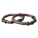
EisenhautGehärtete, vom Kampf durchwirkte Haut.
Herkunft
- Herstellen: Schmiede aus 5 ×
 Schwarzmetall, 5 × Lox-Pelz, 1 ×
Schwarzmetall, 5 × Lox-Pelz, 1 ×  Lox-Trophäe
Lox-Trophäe
 Eisenhelm
Eisenhelm
Ein Helm aus poliertem Eisen, passend für einen Helden.
Herkunft
- Herstellen: Schmiede aus 20 × Eisen, 2 × Hirschfell · je Aufwertung: 5 × Eisen
 Eisenschuppenrüstung
Eisenschuppenrüstung
Eine eiserne Brustplatte, die fast jeden Angriff aushält.
Herkunft
- Herstellen: Schmiede (Stufe 2) aus 20 × Eisen, 2 × Hirschfell · je Aufwertung: 5 × Eisen
 Eiserner Turmschild
Eiserner Turmschild
Ein hoher Schild aus starkem Eisen.
Herkunft
 Elchfellumhang
Elchfellumhang
Ein warmer Umhang mit feinen Details aus eingesponnenem Gold.
Herkunft
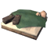
ErntekleidBei der Feldarbeit ist es wichtig, passend gekleidet zu sein. Dieses lange Kleid bedeckt die Knie bei der Arbeit.
Herkunft
- Kaufen: Hildir · 550 Münzen · nach Rückgabe: Hildirs Messingtruhe
 Erntetunika
Erntetunika
Bei der Feldarbeit ist es wichtig, passend gekleidet zu sein. Eine kürzere Tunika ist etwas luftiger.
Herkunft
- Kaufen: Hildir · 550 Münzen · nach Rückgabe: Hildirs Messingtruhe
 Extravagante Kappe (grün)
Extravagante Kappe (grün)
Eine ausgefallene grüne Kappe.
Herkunft
- Kaufen: Hildir · 250 Münzen · nach Rückgabe: Hildirs Silbertruhe
 Extravagante Kappe (orange)
Extravagante Kappe (orange)
Eine ausgefallene orange Kappe.
Herkunft
- Kaufen: Hildir · 300 Münzen · nach Rückgabe: Hildirs Bronzetruhe
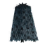
FederumhangWenn du diesen Umhang trägst, fühlst du dich leichter – fast, als ob du fliegen könntest!
Herkunft
- Herstellen: Galdr-Tisch aus 10 ×
 Federn, 5 × Schuppenhaut, 20 × Verfeinertes Eitr · je Aufwertung: 2 × Federn, 5 × Schuppenhaut, 3 × Verfeinertes Eitr
Federn, 5 × Schuppenhaut, 20 × Verfeinertes Eitr · je Aufwertung: 2 × Federn, 5 × Schuppenhaut, 3 × Verfeinertes Eitr
 Feierliche Mütze
Feierliche Mütze
Wer diese Mütze aufsetzt, muss einfach grinsen!
Herkunft
- Herstellen: Werkbank (Stufe 2) aus 2 × Hirschfell, 1 × Bronze, 1 × Bärenfell, 1 ×
 Bernstein Perle · je Aufwertung: 1 × Hirschfell, 1 × Bronze
Bernstein Perle · je Aufwertung: 1 × Hirschfell, 1 × Bronze
 Fenris-Beinschutz
Fenris-Beinschutz
Die Beine der Bestie waren schlank und stark, sodass sie große Sprünge machen konnte.
Herkunft
- Herstellen: Werkbank (Stufe 2) aus 20 ×
 Fenris-Haarschopf, 5 × Wolfspelz, 10 ×
Fenris-Haarschopf, 5 × Wolfspelz, 10 ×  Lederreste · je Aufwertung: 5 × Fenris-Haarschopf, 3 × Wolfspelz, 4 × Lederreste
Lederreste · je Aufwertung: 5 × Fenris-Haarschopf, 3 × Wolfspelz, 4 × Lederreste
 Fenris-Kaputze
Fenris-Kaputze
Die Augen der Bestie waren weise und wissend, so dass es die Stärke eines Kriegers mit einem Blick ermessen konnte.
Herkunft
- Herstellen: Werkbank (Stufe 2) aus 20 × Fenris-Haarschopf, 2 × Wolfspelz, 1 ×
 Kultisten-Trophäe · je Aufwertung: 5 × Fenris-Haarschopf, 4 × Wolfspelz
Kultisten-Trophäe · je Aufwertung: 5 × Fenris-Haarschopf, 4 × Wolfspelz
 Fenris-Pelz
Fenris-Pelz
Die Bestie konnte tief einatmen, sodass ihr Heulen weit über das Land zu hören war.
Herkunft
- Herstellen: Werkbank (Stufe 2) aus 20 × Fenris-Haarschopf, 5 × Wolfspelz, 10 × Lederreste · je Aufwertung: 5 × Fenris-Haarschopf, 3 × Wolfspelz, 4 × Lederreste
 Feuerherz
Feuerherz
Du kannst hören, wie es im Takt deines Herzschlags voller Sehnsucht brennt.
Herkunft
- Herstellen: Schwarzschmiede aus 5 × Flammenkern, 5 ×
 Schwefel, 1 ×
Schwefel, 1 ×  Geschmolzener Kern, 1 ×
Geschmolzener Kern, 1 ×  Morgen-Trophäe
Morgen-Trophäe
 Fischerhut
Fischerhut
Es bedarf erfahrene Abenteurer, um diesen flotten Hut einzuholen.
Herkunft
- Herstellen: Werkbank aus 1 ×
 Barsch, 1 ×
Barsch, 1 ×  Hecht, 1 ×
Hecht, 1 ×  Thunfisch, 1 ×
Thunfisch, 1 ×  Salmler, 1 ×
Salmler, 1 ×  Trollfisch, 1 ×
Trollfisch, 1 ×  Riesenhering, 1 ×
Riesenhering, 1 ×  Zackenbarsch, 1 ×
Zackenbarsch, 1 ×  Korallenbarsch, 1 ×
Korallenbarsch, 1 × 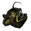
Seeteufel, 1 × Nordlachs, 1 ×
Nordlachs, 1 ×  Magmafisch, 1 ×
Magmafisch, 1 ×  Kugelfisch · je Aufwertung: 1 × Barsch, 1 × Hecht, 1 × Thunfisch, 1 × Salmler, 1 × Trollfisch, 1 × Riesenhering, 1 × Zackenbarsch, 1 × Korallenbarsch, 1 × Seeteufel, 1 × Nordlachs, 1 × Magmafisch, 1 × Kugelfisch
Kugelfisch · je Aufwertung: 1 × Barsch, 1 × Hecht, 1 × Thunfisch, 1 × Salmler, 1 × Trollfisch, 1 × Riesenhering, 1 × Zackenbarsch, 1 × Korallenbarsch, 1 × Seeteufel, 1 × Nordlachs, 1 × Magmafisch, 1 × Kugelfisch
 Flammenkern-Beinschienen
Flammenkern-Beinschienen
Eine schwere Hose bieten Schutz gegen Hitze, während massive Beinschienen die Beine vor Tiefschlägen schützen.
Herkunft
- Herstellen: Schwarzschmiede (Stufe 3) aus 20 × Flammenkern, 3 × Asksvin-Haut, 5 ×
 Verkohlter Knochen · je Aufwertung: 10 × Flammenkern, 1 × Asksvin-Haut
Verkohlter Knochen · je Aufwertung: 10 × Flammenkern, 1 × Asksvin-Haut
 Flammenkern-Brustpanzer
Flammenkern-Brustpanzer
Diese Verschmelzung aus verkohlten Knochen und dem mysteriösen Flammenkern gewährt besseren Schutz als alles, was man in Midgard je finden würde.
Herkunft
- Herstellen: Schwarzschmiede (Stufe 3) aus 20 × Flammenkern, 3 × Asksvin-Haut, 5 × Verkohlter Knochen, 1 ×
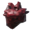
Morgenherz · je Aufwertung: 10 ×Flammenkern, 1 × Asksvin-Haut
 Flammenkern-Helm
Flammenkern-Helm
Wenn du diesen Helm trägst, werden deine Feinde nicht mehr einfach so versuchen, dir den Kopf abzubeißen.
Herkunft
- Herstellen: Schwarzschmiede (Stufe 3) aus 16 × Flammenkern, 3 × Asksvin-Haut, 2 × Verkohlter Knochen, 4 × Verfeinertes Eitr · je Aufwertung: 8 × Flammenkern, 1 × Asksvin-Haut, 2 × Verfeinertes Eitr
 Flammenkern-Schild
Flammenkern-Schild
Der Schild ist und bleibt die wichtigste Waffe eines jeden Wikingers.
Herkunft
- Herstellen: Schwarzschmiede (Stufe 3) aus 10 ×
 Aschenholz, 8 × Flammenkern, 2 × Asksvin-Haut · je Aufwertung: 10 × Aschenholz, 4 × Flammenkern, 2 × Asksvin-Haut
Aschenholz, 8 × Flammenkern, 2 × Asksvin-Haut · je Aufwertung: 10 × Aschenholz, 4 × Flammenkern, 2 × Asksvin-Haut
 Flammenkern-Turmschild
Flammenkern-Turmschild
Die beste Verteidigung ist eine überlegene Verteidigung.
Herkunft
- Herstellen: Schwarzschmiede (Stufe 3) aus 15 × Aschenholz, 10 × Flammenkern, 5 × Asksvin-Haut · je Aufwertung: 10 × Aschenholz, 4 × Flammenkern, 2 × Asksvin-Haut
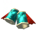
Flosse des SchicksalsLeere deinen Verstand und deine Seele, sei formlos und werde Eins mit dem Wasser.
Herkunft
- Herstellen: Schmiede aus 5 ×
 Chitin, 5 ×
Chitin, 5 ×  Schlangenschuppe, 1 ×
Schlangenschuppe, 1 ×  Seeschlangen-Trophäe
Seeschlangen-Trophäe
 Fußring
Fußring
Leicht und mit Hast durchwirkt.
Herkunft
- Herstellen: Schmiede aus 5 × Eisen, 5 ×
 Verwitterter Knochen, 1 ×
Verwitterter Knochen, 1 ×  Surtling-Trophäe
Surtling-Trophäe
 Gebundenes Kopftuch (blau)
Gebundenes Kopftuch (blau)
Ein praktisches blaues Kopftuch.
Herkunft
- Kaufen: Hildir · 200 Münzen · nach Rückgabe: Hildirs Messingtruhe
 Gebundenes Kopftuch (gelb)
Gebundenes Kopftuch (gelb)
Ein praktisches gelbes Kopftuch.
Herkunft
- Kaufen: Hildir · 250 Münzen · nach Rückgabe: Hildirs Silbertruhe
 Gepolsterte Beinschienen
Gepolsterte Beinschienen
Von einem echten Experten hergestellter Schutz für die Beine.
Herkunft
- Herstellen: Schmiede (Stufe 2) aus 10 × Eisen, 20 × Leinenzwirn · je Aufwertung: 3 × Eisen, 10 × Leinenzwirn
 Gepolsterter Brustpanzer
Gepolsterter Brustpanzer
Edel gearbeitet und stabil genug, um selbst den schärfsten Klingen zu trotzen.
Herkunft
- Herstellen: Schmiede (Stufe 2) aus 10 × Eisen, 20 × Leinenzwirn · je Aufwertung: 3 × Eisen, 10 × Leinenzwirn
 Gepolsterter Helm
Gepolsterter Helm
Ein edler Helm, der dennoch angenehm zu tragen ist.
Herkunft
- Herstellen: Schmiede aus 10 × Eisen, 15 × Leinenzwirn · je Aufwertung: 5 × Eisen, 10 × Leinenzwirn
 Gewundenes Kopftuch (grün)
Gewundenes Kopftuch (grün)
Ein schickes grünes Kopftuch.
Herkunft
- Kaufen: Hildir · 250 Münzen · nach Rückgabe: Hildirs Silbertruhe
 Gewundenes Kopftuch (rot)
Gewundenes Kopftuch (rot)
Ein schickes rotes Kopftuch.
Herkunft
- Kaufen: Hildir · 300 Münzen · nach Rückgabe: Hildirs Bronzetruhe
 Halsstecher
Halsstecher
Klauen, Knochen und Gold – gib ihnen Blut, dann gewähren sie dir einen Segen.
Herkunft
- Herstellen: Schwarzschmiede aus 5 × Blutgold, 5 ×
 Lange Klauen, 1 ×
Lange Klauen, 1 ×  Elch-Trophäe
Elch-Trophäe
 Haube der Vorhut
Haube der Vorhut
Beschützt den Nacken vor den Elementen sowie den scharfen Zähnen des Feindes.
Herkunft
- Herstellen: Schwarzschmiede (Stufe 4) aus 5 ×
 Robbenpelz, 1 ×
Robbenpelz, 1 ×  Gussform: Haube der Vorhut, 5 × Elchhaut, 1 ×
Gussform: Haube der Vorhut, 5 × Elchhaut, 1 ×  Elchsehne · je Aufwertung: 3 × Robbenpelz, 3 × Elchhaut, 1 × Elchsehne
Elchsehne · je Aufwertung: 3 × Robbenpelz, 3 × Elchhaut, 1 × Elchsehne - Garen: Frost-Gießerei aus
 Guss: Haube der Vorhut
Guss: Haube der Vorhut
 Helm des Beschützers
Helm des Beschützers
Geschmückt mit den Flügeln des Siegs.
Herkunft
- Herstellen: Schwarzschmiede (Stufe 4) aus 20 × Blutgold, 1 ×
 Gussform: Helm des Beschützers, 4 × Elchhaut · je Aufwertung: 15 × Blutgold, 3 × Elchhaut
Gussform: Helm des Beschützers, 4 × Elchhaut · je Aufwertung: 15 × Blutgold, 3 × Elchhaut - Garen: Frost-Gießerei aus
 Guss: Helm des Beschützers
Guss: Helm des Beschützers
 Herz des Waldes
Herz des Waldes
Es pulsiert vor uraltem Leben.
Herkunft
- Herstellen: Schmiede aus 5 × Bronze, 5 ×
 Uralter Samen, 1 ×
Uralter Samen, 1 ×  Grauzwergen Schamanen-Trophäe
Grauzwergen Schamanen-Trophäe
 Hexenkrone
Hexenkrone
Man sagt, die Seele einer Hexe könne Sterblichen seltsame Kräfte verleihen ...
Herkunft
- Herstellen: Schwarzschmiede aus 5 × Blutgold, 5 ×
 Nornagarn, 1 ×
Nornagarn, 1 ×  Hexen-Trophäe
Hexen-Trophäe
 Hirschfellumhang
Hirschfellumhang
Rustikal, aber schick.
Herkunft
- Herstellen: Werkbank (Stufe 2) aus 4 × Hirschfell, 5 ×
 Knochenfragmente · je Aufwertung: 4 × Hirschfell, 5 × Knochenfragmente
Knochenfragmente · je Aufwertung: 4 × Hirschfell, 5 × Knochenfragmente
 Hölzerner Turmschild
Hölzerner Turmschild
Ein grober, aber schwerer Holzschild.
Herkunft
- Herstellen: Werkbank aus 10 ×
 Holz, 6 × Lederreste · je Aufwertung: 5 × Holz, 3 × Lederreste
Holz, 6 × Lederreste · je Aufwertung: 5 × Holz, 3 × Lederreste
 Holzschild
Holzschild
Ein einfacher Holzschild.
Herkunft
- Herstellen: Werkbank aus 10 × Holz, 4 ×
 Harz, 4 × Lederreste · je Aufwertung: 5 × Holz, 2 × Harz, 2 × Lederreste
Harz, 4 × Lederreste · je Aufwertung: 5 × Holz, 2 × Harz, 2 × Lederreste
 Hose der Vorhut
Hose der Vorhut
Warme Hose für kalte Regionen. Die Stiefel bieten hervorragenden Halt auf eisigem Terrain.
Herkunft
- Herstellen: Schwarzschmiede (Stufe 4) aus 12 × Blutgold, 1 ×
 Gussform: Hose der Vorhut, 8 × Elaking-Haarbüschel, 4 × Robbenpelz · je Aufwertung: 6 × Blutgold, 4 × Elaking-Haarbüschel, 2 × Robbenpelz
Gussform: Hose der Vorhut, 8 × Elaking-Haarbüschel, 4 × Robbenpelz · je Aufwertung: 6 × Blutgold, 4 × Elaking-Haarbüschel, 2 × Robbenpelz - Garen: Frost-Gießerei aus
 Guss: Hose der Vorhut
Guss: Hose der Vorhut
 Hose des Beschützers
Hose des Beschützers
Schwere Stiefel und Hose, um die Wärme drin zu halten, während du durch schneebedeckte Gebiete stapfst.
Herkunft
- Herstellen: Schwarzschmiede (Stufe 4) aus 20 × Blutgold, 1 ×
 Gussform: Hose des Beschützers, 8 × Elchhaut, 4 × Lederriemen · je Aufwertung: 15 × Blutgold, 3 × Elchhaut, 3 × Lederriemen
Gussform: Hose des Beschützers, 8 × Elchhaut, 4 × Lederriemen · je Aufwertung: 15 × Blutgold, 3 × Elchhaut, 3 × Lederriemen - Garen: Frost-Gießerei aus
 Guss: Hose des Beschützers
Guss: Hose des Beschützers
 Hose des Rufers
Hose des Rufers
Enge Beinwickel, die die Kälte von deiner Haut fernhalten.
Herkunft
- Herstellen: Galdr-Tisch (Stufe 3) aus 6 × Blutgold, 1 ×
 Gussform: Hose des Rufers, 6 × Elchhaut, 5 × Nornagarn · je Aufwertung: 3 × Blutgold, 3 × Elchhaut, 3 × Nornagarn
Gussform: Hose des Rufers, 6 × Elchhaut, 5 × Nornagarn · je Aufwertung: 3 × Blutgold, 3 × Elchhaut, 3 × Nornagarn - Garen: Frost-Gießerei aus
 Guss: Hose des Rufers
Guss: Hose des Rufers
 Hose von Ask
Hose von Ask
Der erste Mann, der Midgard durchstreifte, war gern vorsichtig. Wer diese Hose trägt, sollte sich eine Scheibe von ihm abschneiden.
Herkunft
- Herstellen: Schwarzschmiede (Stufe 3) aus 15 × Leinenzwirn, 4 × Lox-Pelz, 10 × Asksvin-Haut · je Aufwertung: 10 × Leinenzwirn, 2 × Lox-Pelz, 5 × Asksvin-Haut
 Hose von Embla
Hose von Embla
Ob die erste Zauberin jemals solche Hosen trug, werden wir niemals erfahren.
Herkunft
- Herstellen: Galdr-Tisch (Stufe 2) aus 20 × Leinenzwirn, 20 × Verfeinertes Eitr, 10 × Asksvin-Haut · je Aufwertung: 10 × Leinenzwirn, 5 × Verfeinertes Eitr
 Irrlicht
Irrlicht
Irrlicht, das selbst den dichtesten Nebel durchdringt.
Herkunft
 Jörmundling
Jörmundling
Aus dem glühenden Stein dringen gequälte Schmerzensschreie heraus.
Herkunft
- Herstellen: Schwarzschmiede aus 5 × Flammenkern, 5 × Verfeinertes Eitr, 1 ×
 Blutstein, 1 ×
Blutstein, 1 ×  Gefallene-Walküre-Trophäe
Gefallene-Walküre-Trophäe
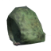
Kapuze von AskAls erster Mann von Midgard wusste Ask, dass es wichtig ist, nicht allzu viel Aufsehen zu erregen.
Herkunft
- Herstellen: Schwarzschmiede (Stufe 3) aus 15 × Leinenzwirn, 4 × Lox-Pelz, 10 × Asksvin-Haut · je Aufwertung: 10 × Leinenzwirn, 2 × Lox-Pelz, 5 × Asksvin-Haut
 Kapuze von Embla
Kapuze von Embla
Selbst die erste Zauberin verhüllte gern ihr Gesicht, um die Mystik aufrechtzuerhalten. Zauber sollen noch stärker werden, wenn man sie auf diese Weise ehrt.
Herkunft
- Herstellen: Galdr-Tisch (Stufe 2) aus 16 × Leinenzwirn, 15 × Verfeinertes Eitr, 2 × Asksvin-Haut · je Aufwertung: 8 × Leinenzwirn, 5 × Verfeinertes Eitr
 Knochenturmschild
Knochenturmschild
Die Knochen toter Krieger sorgen für einen soliden Schutz.
Herkunft
- Herstellen: Werkbank (Stufe 3) aus 10 × Holz, 10 × Knochenfragmente, 3 ×
 Skelett-Trophäe · je Aufwertung: 5 × Holz, 5 × Knochenfragmente
Skelett-Trophäe · je Aufwertung: 5 × Holz, 5 × Knochenfragmente
 Kopfschmuck des Bären
Kopfschmuck des Bären
Gib dich dem animalischen Zorn eines mächtigen Bären hin.
Herkunft
- Herstellen: Werkbank (Stufe 2) aus 5 × Bärenfell, 1 × Bären-Trophäe · je Aufwertung: 2 × Bärenfell
 Kopfschmuck des Rufers
Kopfschmuck des Rufers
Die Geister des Landes antworten deinem Ruf. Wird deine Verkleidung sie täuschen können?
Herkunft
- Herstellen: Galdr-Tisch (Stufe 3) aus 2 × Elchsehne, 1 ×
 Gussform: Kopfschmuck des Rufers, 1 × Elch-Trophäe, 3 × Nornagarn · je Aufwertung: 1 × Elchsehne, 2 × Nornagarn
Gussform: Kopfschmuck des Rufers, 1 × Elch-Trophäe, 3 × Nornagarn · je Aufwertung: 1 × Elchsehne, 2 × Nornagarn - Garen: Frost-Gießerei aus
 Guss: Kopfschmuck des Rufers
Guss: Kopfschmuck des Rufers
 Kristallherz
Kristallherz
Eine Scherbe aus gefrorenem Leid und Verzweiflung.
Herkunft
- Herstellen: Schmiede aus 5 × Silber, 5 ×
 Kristall, 1 ×
Kristall, 1 ×  Steingolem-Trophäe
Steingolem-Trophäe
 Krone der Wurzeln
Krone der Wurzeln
Aufwendig gearbeitete, aber schmerzhafte Kopfbedeckung.
Herkunft
- Kaufen: Die Sumpfhexe · 3.000 Münzen · nach dem Sieg über: Writhan
 Krone von Valheim
Krone von Valheim
Eine ruhmreiche Belohnung für die wahrhaft Würdigen.
Herkunft
 Lederbrustpanzer
Lederbrustpanzer
Ein lederner Brustpanzer.
Herkunft
- Herstellen: Werkbank (Stufe 2) aus 6 × Hirschfell · je Aufwertung: 6 × Hirschfell, 5 × Knochenfragmente
 Lederhelm
Lederhelm
Ein Kopfschutz aus gehärtetem Leder.
Herkunft
- Herstellen: Werkbank (Stufe 2) aus 6 × Hirschfell · je Aufwertung: 6 × Hirschfell, 5 × Knochenfragmente
 Lederhosen
Lederhosen
Sie quietschen ein wenig, wenn man geht.
Herkunft
- Herstellen: Werkbank (Stufe 2) aus 6 × Hirschfell · je Aufwertung: 6 × Hirschfell, 5 × Knochenfragmente
 Leinenumhang
Leinenumhang
Ein einfacher Reiseumhang.
Herkunft
- Herstellen: Werkbank (Stufe 2) aus 20 × Leinenzwirn, 1 × Silber · je Aufwertung: 4 × Leinenzwirn
 Lendenschutz des Bären
Lendenschutz des Bären
Bedeckt die wichtigsten Teile, aber sonst nicht viel mehr.
Herkunft
- Herstellen: Werkbank (Stufe 2) aus 5 × Bärenfell, 4 ×
 Blaubeeren · je Aufwertung: 2 × Bärenfell, 1 × Blaubeeren
Blaubeeren · je Aufwertung: 2 × Bärenfell, 1 × Blaubeeren
 Lox-Umhang
Lox-Umhang
Ein Pelz von einer der größten Bestien überhaupt. Dick und warm.
Herkunft
 Loxfellhose
Loxfellhose
Weich, leise und beweglich.
Herkunft
- Herstellen: Werkbank (Stufe 2) aus 5 × Lox-Pelz, 8 × Knochenfragmente, 2 ×
 Wurzel · je Aufwertung: 3 × Lox-Pelz, 4 × Knochenfragmente, 1 × Wurzel
Wurzel · je Aufwertung: 3 × Lox-Pelz, 4 × Knochenfragmente, 1 × Wurzel
 Loxfelljacke
Loxfelljacke
Ein starker Geruch von Moschus hängt noch daran.
Herkunft
- Herstellen: Werkbank (Stufe 2) aus 5 × Lox-Pelz, 8 × Knochenfragmente, 2 × Wurzel · je Aufwertung: 6 × Lox-Pelz, 4 × Knochenfragmente, 1 × Wurzel
 Loxfellkapuze
Loxfellkapuze
Sieh die Welt mit den Augen eines Lox.
Herkunft
- Herstellen: Werkbank (Stufe 2) aus 4 × Lox-Pelz, 4 × Knochenfragmente, 2 ×
 Writhan-Wurzeln · je Aufwertung: 2 × Lox-Pelz, 2 × Knochenfragmente, 1 × Writhan-Wurzeln
Writhan-Wurzeln · je Aufwertung: 2 × Lox-Pelz, 2 × Knochenfragmente, 1 × Writhan-Wurzeln
 Megingiard
Megingiard
Gewährt dem Träger übermenschliche Stärke.
Herkunft
- Kaufen: Haldor · 950 Münzen
 Mit Eitr gewobene Hose
Mit Eitr gewobene Hose
Von Magiern getragene Hosen sind immer sehr eng. Unbehagen ermöglicht den Fokus, der für Magie erforderlich ist …
Herkunft
- Herstellen: Galdr-Tisch aus 20 × Leinenzwirn, 20 × Verfeinertes Eitr, 10 × Schuppenhaut · je Aufwertung: 10 × Leinenzwirn, 5 × Verfeinertes Eitr
 Mit Eitr gewobene Kapuze
Mit Eitr gewobene Kapuze
Einen Zauberer erkennt man an den Augen. Die meisten Magier tragen Kutten, um ihre okkulte Natur zu verbergen.
Herkunft
- Herstellen: Galdr-Tisch aus 16 × Leinenzwirn, 15 × Verfeinertes Eitr, 2 × Eisen · je Aufwertung: 8 × Leinenzwirn, 5 × Verfeinertes Eitr
 Mit Eitr gewobene Robe
Mit Eitr gewobene Robe
In jede Naht und Falte dieser kunstvollen, mehrschichtigen Robe wurden Zaubersprüche eingewoben.
Herkunft
- Herstellen: Galdr-Tisch aus 20 × Leinenzwirn, 20 × Verfeinertes Eitr, 10 × Federn, 5 × Schuppenhaut · je Aufwertung: 10 × Leinenzwirn, 5 × Verfeinertes Eitr
 Muster des Bären
Muster des Bären
Wenn diese komplexen Zeichnungen Krieger aus fernen Landen schützen können, dann sicherlich auch dich.
Herkunft
- Herstellen: Werkbank (Stufe 2) aus 5 × Bärenfell, 2 ×
 Bärentatze, 4 × Blaubeeren · je Aufwertung: 2 × Bärenfell, 1 × Blaubeeren
Bärentatze, 4 × Blaubeeren · je Aufwertung: 2 × Bärenfell, 1 × Blaubeeren
 Nord-Buckler
Nord-Buckler
Effektive Methode, um sich zu schützen – vorausgesetzt, man weiß, ihn zu nutzen.
Herkunft
- Herstellen: Schwarzschmiede (Stufe 4) aus 10 × Blutgold, 1 ×
 Gussform: Nord-Buckler, 10 ×
Gussform: Nord-Buckler, 10 ×  Zimmerholz · je Aufwertung: 5 × Blutgold, 5 × Zimmerholz
Zimmerholz · je Aufwertung: 5 × Blutgold, 5 × Zimmerholz - Garen: Frost-Gießerei aus
 Guss: Nord-Buckler
Guss: Nord-Buckler
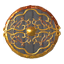
Nord-GroßschildDer Feind kann dich nicht treffen, wenn er dich nicht sehen kann.
Herkunft
- Herstellen: Schwarzschmiede (Stufe 4) aus 20 × Blutgold, 1 ×
 Gussform: Nord-Großschild, 20 × Zimmerholz · je Aufwertung: 10 × Blutgold, 10 × Zimmerholz
Gussform: Nord-Großschild, 20 × Zimmerholz · je Aufwertung: 10 × Blutgold, 10 × Zimmerholz - Garen: Frost-Gießerei aus
 Guss: Nord-Großschild
Guss: Nord-Großschild
 Nord-Schild
Nord-Schild
Bietet Schutz und sieht dabei noch gut aus!
Herkunft
- Herstellen: Schwarzschmiede (Stufe 4) aus 15 × Blutgold, 1 ×
 Gussform: Nord-Schild, 10 × Zimmerholz · je Aufwertung: 8 × Blutgold, 5 × Zimmerholz
Gussform: Nord-Schild, 10 × Zimmerholz · je Aufwertung: 8 × Blutgold, 5 × Zimmerholz - Garen: Frost-Gießerei aus
 Guss: Nord-Schild
Guss: Nord-Schild
 Odins Helm
Odins Helm
Die besten Krieger Odins verdienen nur die feinsten Stoffe.
Herkunft
- Herstellen: Werkbank aus 10 × Lederreste, 4 ×
 Kohle · je Aufwertung: 5 × Lederreste, 2 × Kohle
Kohle · je Aufwertung: 5 × Lederreste, 2 × Kohle
 Odins Umhang
Odins Umhang
Die besten Krieger Odins verdienen nur die feinsten Stoffe.
Herkunft
- Herstellen: Werkbank aus 10 × Lederreste, 4 × Kohle · je Aufwertung: 5 × Lederreste, 2 × Kohle
 Pelzkappe (braun)
Pelzkappe (braun)
Eine warme Pelzkappe, gefertigt aus dem feinsten Leder.
Herkunft
- Kaufen: Hildir · 200 Münzen · nach Rückgabe: Hildirs Messingtruhe
 Pelzkappe (grau)
Pelzkappe (grau)
Eine warme Pelzkappe, gefertigt aus der feinsten Wolle.
Herkunft
- Kaufen: Hildir · 300 Münzen · nach Rückgabe: Hildirs Bronzetruhe
 Perlenkleid (blau)
Perlenkleid (blau)
Ein blaues Kleid, ergänzt um Perlen und Bronze.
Herkunft
- Kaufen: Hildir · 550 Münzen · nach Rückgabe: Hildirs Bronzetruhe
 Perlenkleid (braun)
Perlenkleid (braun)
Braune Kleidung, ergänzt um Perlen und Silber.
Herkunft
- Kaufen: Hildir · 550 Münzen · nach Rückgabe: Hildirs Bronzetruhe
 Perlenkleid (gelb)
Perlenkleid (gelb)
Ein gelbes Kleid, ergänzt um Perlen und Silber.
Herkunft
- Kaufen: Hildir · 550 Münzen · nach Rückgabe: Hildirs Bronzetruhe
 Perlentunika (blau)
Perlentunika (blau)
Eine blaue Tunika, ergänzt um Perlen und Silber.
Herkunft
- Kaufen: Hildir · 550 Münzen · nach Rückgabe: Hildirs Bronzetruhe
 Perlentunika (gelb)
Perlentunika (gelb)
Eine gelbe Tunika, ergänzt um Perlen und Silber.
Herkunft
- Kaufen: Hildir · 550 Münzen · nach Rückgabe: Hildirs Bronzetruhe
 Perlentunika (rot)
Perlentunika (rot)
Eine rote Tunika, ergänzt um Perlen und Bronze.
Herkunft
- Kaufen: Hildir · 550 Münzen · nach Rückgabe: Hildirs Bronzetruhe
 Pulsierende Ohrringe
Pulsierende Ohrringe
Wenn du genau hinhörst, dringen die schwachen Echos verlorener magischer Seelen an deine Ohren …
Herkunft
- Herstellen: Schwarzschmiede aus 5 × Chitinpanzer, 5 × Verfeinertes Eitr, 1 ×
 Gjall-Trophäe
Gjall-Trophäe
 Robe des Rufers
Robe des Rufers
Goldverzierte Roben, nur für die mächtigsten aller Magier.
Herkunft
- Herstellen: Galdr-Tisch (Stufe 3) aus 6 × Blutgold, 1 ×
 Gussform: Robe des Rufers, 6 × Elchhaut, 5 × Nornagarn · je Aufwertung: 3 × Blutgold, 3 × Elchhaut, 3 × Nornagarn
Gussform: Robe des Rufers, 6 × Elchhaut, 5 × Nornagarn · je Aufwertung: 3 × Blutgold, 3 × Elchhaut, 3 × Nornagarn - Garen: Frost-Gießerei aus
 Guss: Robe des Rufers
Guss: Robe des Rufers
 Robe von Embla
Robe von Embla
Diese Robe, die von der Kraft der ersten Zauberin erfüllt ist, verleiht jedem einen Segen, der uralte Zauberkunst anwenden möchte.
Herkunft
- Herstellen: Galdr-Tisch (Stufe 2) aus 20 × Leinenzwirn, 20 × Verfeinertes Eitr, 10 × Asksvin-Haut, 5 × Flammenkern · je Aufwertung: 10 × Leinenzwirn, 5 × Verfeinertes Eitr, 2 × Flammenkern
 Schalkleid (blau)
Schalkleid (blau)
Ein blaues Kleid, kombiniert mit einem warmen Schal.
Herkunft
- Kaufen: Hildir · 450 Münzen · nach Rückgabe: Hildirs Silbertruhe
 Schalkleid (braun)
Schalkleid (braun)
Ein braunes Kleid, kombiniert mit einem warmen Schal.
Herkunft
- Kaufen: Hildir · 450 Münzen · nach Rückgabe: Hildirs Silbertruhe
 Schalkleid (gelb)
Schalkleid (gelb)
Ein gelbes Kleid, kombiniert mit einem warmen Schal.
Herkunft
- Kaufen: Hildir · 450 Münzen · nach Rückgabe: Hildirs Silbertruhe
 Schattenschleier
Schattenschleier
Perfekt für alle, die mit dem Tod tanzen und feindlichen Hieben ausweichen.
Herkunft
- Herstellen: Schmiede aus 5 × Schwarzmetall, 1 ×
 Fuling Berserker-Trophäe, 10 × Leinenzwirn
Fuling Berserker-Trophäe, 10 × Leinenzwirn
 Schild der Wurzeln
Schild der Wurzeln
Biegsame Wurzeln wurden zu einem überraschend stabilen Schild geflochten.
Herkunft
- Herstellen: Werkbank (Stufe 2) aus 10 ×
 Edelholz, 1 × Writhan-Wurzeln · je Aufwertung: 5 × Edelholz, 2 × Writhan-Wurzeln
Edelholz, 1 × Writhan-Wurzeln · je Aufwertung: 5 × Edelholz, 2 × Writhan-Wurzeln
 Schlangenschuppen-Schild
Schlangenschuppen-Schild
Ein stabiler Schild aus überlappenden Schuppen.
Herkunft
- Herstellen: Schmiede (Stufe 3) aus 10 × Edelholz, 4 × Eisen, 8 × Schlangenschuppe · je Aufwertung: 10 × Edelholz, 2 × Eisen, 4 × Schlangenschuppe
 Schwarzmetall-Schild
Schwarzmetall-Schild
Aus dem stärksten Metall geschmiedet. Kann sogar die tödlichsten Klingen in ihre Schranken weisen.
Herkunft
- Herstellen: Schmiede (Stufe 3) aus 10 × Edelholz, 8 × Schwarzmetall, 5 ×
 Kette · je Aufwertung: 10 × Edelholz, 4 × Schwarzmetall, 2 × Kette
Kette · je Aufwertung: 10 × Edelholz, 4 × Schwarzmetall, 2 × Kette
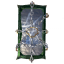
Schwarzmetall-TurmschildEin Turmschild aus leuchtendem, dunklem Metall.
Herkunft
- Herstellen: Schmiede (Stufe 3) aus 15 × Edelholz, 10 × Schwarzmetall, 7 × Kette · je Aufwertung: 10 × Edelholz, 4 × Schwarzmetall, 2 × Kette
 Silberschild
Silberschild
Ein Schild aus leuchtendem Silber.
Herkunft
 Stirnband
Stirnband
Fühlt sich etwas … feucht an.
Herkunft
- Kaufen: Hildir · 175 Münzen
 Strohhut
Strohhut
Das perfekte Mittel gegen Sonnenstich.
Herkunft
- Kaufen: Hildir · 300 Münzen · nach Rückgabe: Hildirs Messingtruhe
 Trolllederhelm
Trolllederhelm
Trollleder lässt sich zwar nur schwer verarbeiten, wird aber zu einer ausgezeichneten Rüstung.
Herkunft
- Herstellen: Werkbank (Stufe 2) aus 5 × Trollleder, 3 × Knochenfragmente · je Aufwertung: 2 × Trollleder, 1 × Knochenfragmente
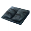
TrolllederhosenHosen aus festem Trollleder.
Herkunft
- Herstellen: Werkbank (Stufe 2) aus 5 × Trollleder · je Aufwertung: 2 × Trollleder
 Trollledertunika
Trollledertunika
Trolle sind schwer zu häuten, aber ihr Leder ist zäh und warm.
Herkunft
- Herstellen: Werkbank (Stufe 2) aus 5 × Trollleder · je Aufwertung: 2 × Trollleder
 Trolllederumhang
Trolllederumhang
Trollleder ist ebenso stabil wie biegsam.
Herkunft
- Herstellen: Werkbank (Stufe 2) aus 10 × Trollleder, 10 × Knochenfragmente · je Aufwertung: 5 × Trollleder, 5 × Knochenfragmente
 Umhang des Rufers
Umhang des Rufers
In diesen Umhang wurde seltsame Magie gewoben, die ihn gleichzeitig leicht und warm werden lässt.
Herkunft
- Herstellen: Galdr-Tisch (Stufe 4) aus 6 × Robbenpelz, 2 × Nornagarn, 5 × Blutgold, 15 × Verfeinertes Eitr · je Aufwertung: 3 × Robbenpelz, 1 × Nornagarn, 2 × Blutgold, 5 × Verfeinertes Eitr
 Umhangtunika (blau)
Umhangtunika (blau)
Eine blaue Tunika, kombiniert mit einem Umhang.
Herkunft
- Kaufen: Hildir · 450 Münzen · nach Rückgabe: Hildirs Silbertruhe
 Umhangtunika (gelb)
Umhangtunika (gelb)
Eine gelbe Tunika, kombiniert mit einem Umhang.
Herkunft
- Kaufen: Hildir · 450 Münzen · nach Rückgabe: Hildirs Silbertruhe
 Umhangtunika (rot)
Umhangtunika (rot)
Eine rote Tunika, kombiniert mit einem Umhang.
Herkunft
- Kaufen: Hildir · 450 Münzen · nach Rückgabe: Hildirs Silbertruhe
 Verstärkter Schild
Verstärkter Schild
Ein mit Eisen verstärkter Holzschild. Der beste Begleiter eines wahren Kriegers.
Herkunft
 Weihnachtsmütze
Weihnachtsmütze
Eine rote Mütze wie sie ein Gnom tragen würde.
Herkunft
- Kaufen: Haldor · 100 Münzen
 Wolfsbeinschutz
Wolfsbeinschutz
Zottige Kniehosen
Herkunft
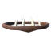
WolfsblickVom scharfen Verstand und der Wildheit eines Wolfes inspiriertes Stirnband.
Herkunft
- Herstellen: Schmiede aus 5 × Silber, 5 ×
 Wolfszahn, 1 ×
Wolfszahn, 1 ×  Fenring-Trophäe
Fenring-Trophäe
 Wolfsbrustschutz
Wolfsbrustschutz
Ein Wams aus Wolfsfell, das wärmt und wild aussieht. Er schützt vor Kälte.
Herkunft
 Wolfsfellumhang
Wolfsfellumhang
Wölfe sind natürliche Überlebenskünstler. Dieser hier hatte einfach nur Pech. Aber immerhin wird sein Pelz jetzt dich vor dem Schnee schützen.
Herkunft
- Herstellen: Werkbank (Stufe 2) aus 6 × Wolfspelz, 4 × Silber, 1 ×
 Wolfs-Trophäe · je Aufwertung: 4 × Wolfspelz, 2 × Silber
Wolfs-Trophäe · je Aufwertung: 4 × Wolfspelz, 2 × Silber
 Wünschelrute
Wünschelrute
Dieser uralte Knochen erinnert sich an den Aufenthaltsort vieler längst vergessener Dinge.
Herkunft
- Beute von: Knochenwanst · Sumpfland
 Wurzelbeinschutz
Wurzelbeinschutz
Eine leichte Rüstung, die auf seltsame Weise aus uralten Wurzeln und Rinden zusammengeflochten ist.
Herkunft
- Herstellen: Werkbank (Stufe 2) aus 10 × Wurzel, 10 × Uralte Rinde, 2 × Hirschfell · je Aufwertung: 2 × Wurzel, 5 × Uralte Rinde
 Wurzelkürass
Wurzelkürass
Edel gearbeitet und stabil genug, um selbst den schärfsten Klingen zu trotzen.
Herkunft
- Herstellen: Werkbank (Stufe 2) aus 10 × Wurzel, 10 × Uralte Rinde, 2 × Hirschfell · je Aufwertung: 2 × Wurzel, 5 × Uralte Rinde
 Wurzelmaske
Wurzelmaske
Dein Kopf passt perfekt in diesen Knoten aus Wurzeln und Rinde.
Herkunft
- Herstellen: Werkbank (Stufe 2) aus 10 × Wurzel, 10 × Uralte Rinde, 4 × Lederreste · je Aufwertung: 2 × Wurzel, 5 × Uralte Rinde
 Zerlumpte Hosen
Zerlumpte Hosen
Immerhin besser, als nackt zu sein.
Herkunft
- Herstellen: Werkbank aus 5 × Lederreste · je Aufwertung: 5 × Lederreste
 Zerlumptes Hemd
Zerlumptes Hemd
Immerhin besser, als nackt zu sein.
Herkunft
- Herstellen: Werkbank aus 5 × Lederreste · je Aufwertung: 5 × Lederreste